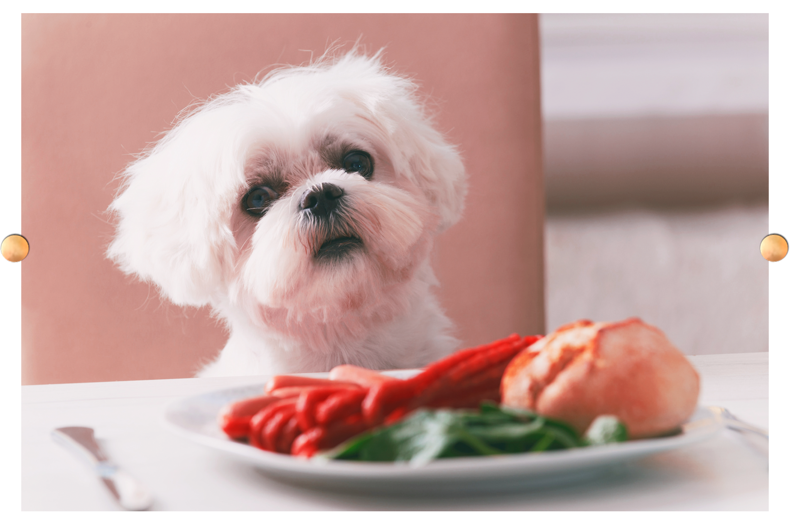

DIETA BARF
La dieta B.A.R.F consiste en alimentar a los perros con alimentos crudos biológicamente adecuados para ellos. BARF es el acrónimo de Biologically Appropriate Raw Food, que puede traducirse al castellano como Alimentación Cruda Biológicamente Adecuada, esto es, ACBA.
Esta dieta fue diseñada por un veterinario australiano llamado Ian Billinghurst. Se basa en la concepción de que los perros están diseñados para comer alimentos crudos. La dieta propone una alimentación a base de proteína de origen animal, a la que se añade un pequeño porcentaje de frutas y verduras.
La dieta BARF se compone básicamente de:
- 60% de huesos con carne y músculo
- 25% de carne magra (puede ser pescado)
- 15% de fruta y verduras crudas, huevos y vísceras
- No contiene conservantes
- No contiene cereales
El principio de la alimentación BARF (Biologically Appropriate Raw Food) consiste en darle a tu cachorro SHIH TZU un alimento compuesto principalmente de carne cruda y complementado con pasta, arroz, verduras … Esta sería una alimentación adecuada para los cachorros, pero sólo si está bien compuesto y administrado correctamente.
Existen mezclas ya preparadas para completar el alimento BARF y así evitar que falten o sean incorrectos….. Estos productos se utilizan para añadir nutrientes que no siempre están presentes en la carne y las verduras BARF. Prepara las comidas de acuerdo a los alimentos y dosis recomendados para la edad y peso de tu cachorro SHIH TZU y añade una dosis adecuada de este suplemento alimenticio.
Desventajas de la dieta Barf
La dieta BARF no está exenta de riesgos porque al ingerir carne cruda, los cachorros SHIH TZU pueden tener problemas de obstrucción e incluso de asfixia. También pueden sufrir problemas bacteriológicos si la calidad de la carne no es perfecta. Como resultado, tu cachorro puede desarrollar salmonelosis u otras intoxicaciones…. Además, este tipo de dieta es complicado de adaptar a las necesidades nutricionales específicas de tu cachorro SHIH TZU. En efecto, el equilibrio es difícil de encontrar según la edad, el comportamiento (activo, padre, sobrepeso…), el tipo de carne (grasa, magro, roja, aves) y la dosis de los suplementos…..
Otros problemas con este tipo de alimentos incluyen el precio, el suministro, el almacenamiento y la preparación de las comidas que consumen mucho tiempo
Cómo incorporar la Dieta Barf
Si tu perro consume algún tipo de pienso y decides cambiar a la dieta BARF, hay una serie de factores que debes considerar:
Al principio, combina comida cruda y cocida. Los perros toleran mejor las verduras si están cocidas, ya que les resulta más fácil digerirlas, por lo que puede ser una buena idea dárselas cocinadas y combinarlas con el resto de alimentos en estado crudo. Congela primero la carne y el pescado para evitar infecciones bacterianas. Busca una receta adecuada para tu perro. Existen muchas recetas para llevar una dieta BARF. Es importante que consideres las características de tu perro y busques las más adecuadas para él. Por ejemplo, si tu perro tiene problemas intestinales, deberás reducir el contenido en grasa. O tal vez tenga alguna intolerancia a algún alimento en concreto. Asimismo, si le das poca fibra, podrá sufrir estreñimiento, algo que sucede a veces con la dieta BARF congelada. Asegúrate de utilizar recetas completas nutricionalmente. Al igual que nosotros, los perros necesitan seguir una dieta bien balanceada. Asegúrate de proporcionarle todos los nutrientes en la proporción adecuada y añáde los suplementos necesarios. Realiza la transición poco a poco. Un cambio radical en la dieta de tu perro puede ocasionarle problemas. Es mejor realizar este cambio gradualmente, mezclando los nuevos alimentos con su pienso habitual y aumentando poco a poco los nuevos, durante dos o tres semanas. Presta atención a la salud de tu perro. La dieta de alimentos crudos no es adecuada para todos los perros. Algunos no la toleran bien. Observa su pelo, sus heces, cualquier signo de dolencia, para asegurarte de que tu perro está siendo correctamente alimentado. Ante cualquier síntoma de irregularidad, acude a tu veterinario.